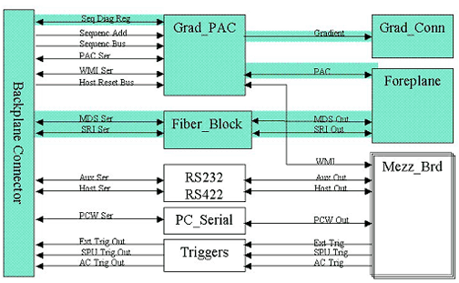

Proprietary to General Electric Company
Direction 5440000, Rev# 5
Signa HDxt Service Methods
Module Version 1.0, Version Date 4/26/07
Proprietary to General Electric Company |
Diagnostics >> Peripherals >> Fiber Optic Diagnostics
This test permits the operator to check the functionality of these LEDs either visually or with a fiber optic light meter.
STIF
None
Illustration 1: STIF Board Level Diagnostics Block Diagram

This diagnostic causes the STIF SRI Transmit and the STIF SRI Reset fiber optic LEDs to illuminate continuously until the operator clicks [Stop].
Visually check that three (3) MDS and SRI outputs are lit and four (4) Grad outputs dimly lit. PAC output should be dimly pulsing.
TPS reset is required prior to scanning.
None